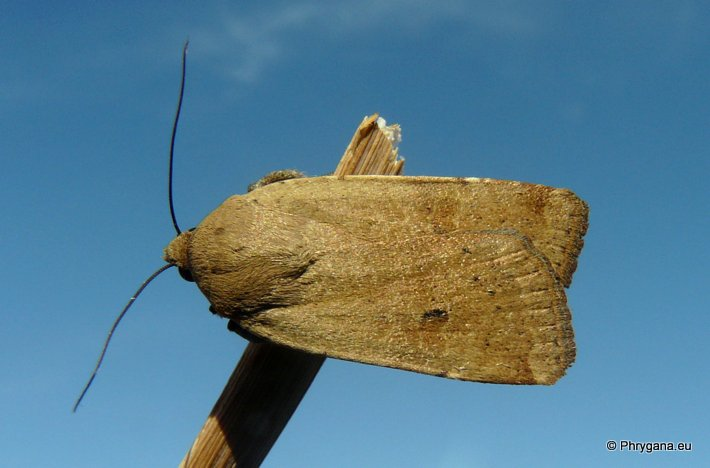
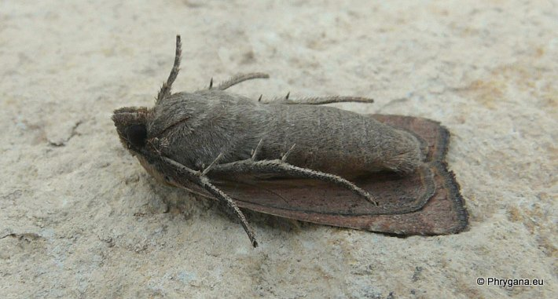
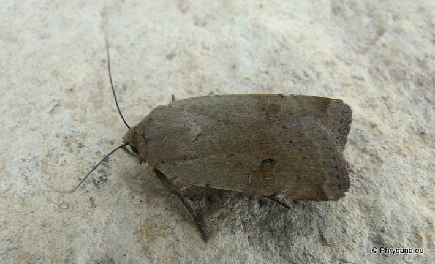
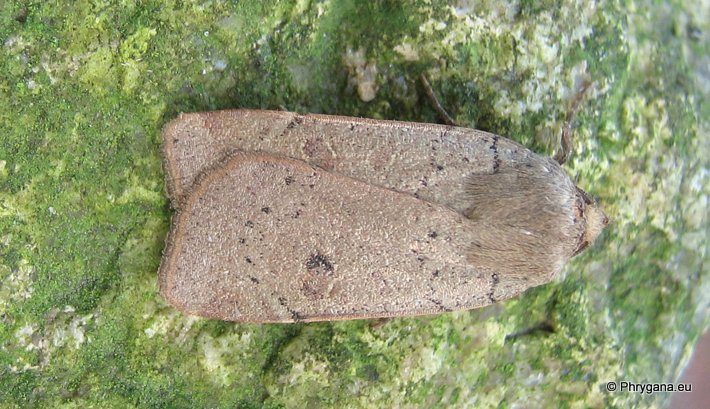
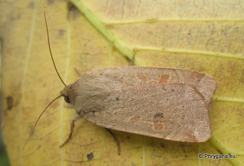
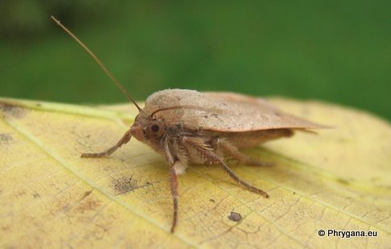

| PHRYGANA | Fauna | Flora | Galles | liste des espèces |
contact -
info - commentaires phrygana1 (at) gmail.com |
| Particularités crétoises | nouveautés | Mines | ressources naturelles |
| Noctua comes Hubner 1813 |
| 456 | Fauna | NOCTUIDAE | Noctuinae | Noctua Linnaeus 1758 |
|
 Noctua comes Agios Giorgos (Melambes) 02 juin 2013 |
| (en) Lesser Yellow Underwing -- (fr) la Hulotte, la Suivante -- (de) Breitflügelige Bandeule -- (nl) Volgeling |
| Envergure: 38 - 44 mm. Couleur de fond brun à brun brun foncé, gris foncé; ailes postérieures jaune orange avec une bande prémarginale noire parallèle au bord |
| Ponte: oeuf petit, blanchâtre (0.5-06 mm) |
| Chenille: de couleur gris vert à gris rougeâtre, présentant des triangles noirs sur les derniers segments et desbandes latérales claires ou foncées; polyphage (nombreuses plantes herbacées et petits arbustes dont des Vitaceae). Chrysalide dans le sol |
| Espèce univoltine |
| Période de vol: juin septembre octobre novembre |
| Statut: Crète: indigène -- Belgique: indigène |
| Biotopes en Crète: phrygana, olivaies, garrigue, jardins, parcs, cultures. |
| Biotopes: lisières, parcs, jardins arborés, bois clairs, friches arborées |
| Distribution: Europe |
| Note: vient à la lumière; peut être une nuisance dans les vignobles |
|
 Noctua comes Agios Giorgos (Melambes) 02 juin 2013 |
|
 Noctua comes Agios Giorgos (Melambes) 02 juin 2013 |
|
 Noctua comes Rosières (Belgique) 21 septembre 2005 |
|

 Noctua comes Rosières (Belgique) 04 octobre 2007 |
| 10 juin 2013 |
| © paul fontaine -- © Phrygana.eu 2007 -- 2013 |